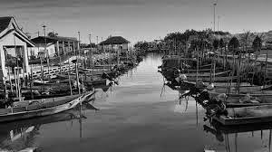
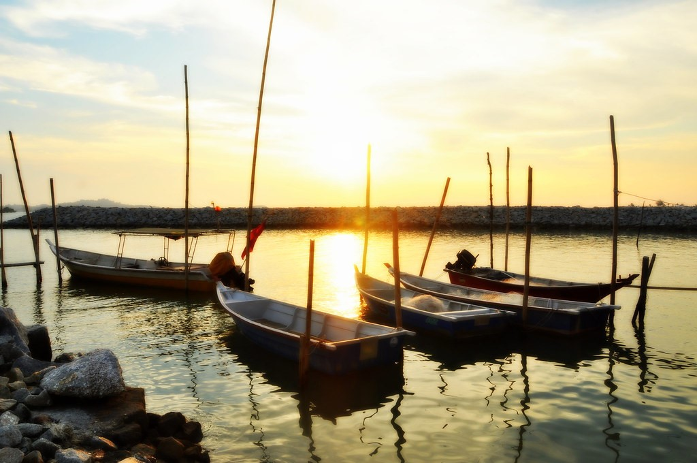
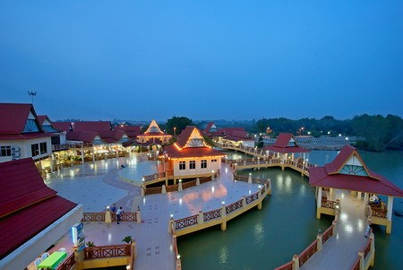

OUR HISTORY

The origin name of “Umbai” was taken from the name of grass which was “rumput kumbai” that grows a lot around the banks of rivers, swamps and waterways, which became the settlement of the villagers of Kampung Umbai.
In the beginning, Kampung Umbai was a small village that located beside Sungai Umbai (Pantai Mat Ibah). After that, the area started to being explored by a few families in 1850 then the area became a beautiful village that be
the pride of the local children.

Originally, Kampung Umbai was from several solok according to the original migration of the family and the source of their daily livelihood, namely Solok Sungai Sembilang, Solok Baroh, Solok Paya Tanjung, Solok Bukit Tembakau, Solok Berangan Enam, Solok
Tengah, Solok Minyak and Solok Pasal. Currently, only Solok Pasal, Solok Sungai Sembilang, Solok Baroh and Solok Tengah are still together under the management of Kampung Umbai.
At first, most of Kampung Umbai villagers was religious teachers who formerly taught religion to locals in religious huts or from house to house. Tok Guru Husin was the popular religion teacher in the village and was appointed
as the first leader of religious teachers. Besides that, the majority of villagers are Malays.

Furthermore, at that time the villager’s main source of income was from marine sources and plant sources. Therefore, most of them are fisherman and farmer. And then, all the marine catches and crops are sold to the villagers as their source of food.
Afterwards, with the supervision of village chief and the villagers exert their energy to develop their village. As a result, now Kampung Umbai looks so beautiful, arranged with its residents who are friendly and live
in a harmonious atmosphere.
Welcome!

Welcome to the latest official Website of Kampung Umbai! Do enjoy your visit here and make sure to follow and join us on social media !
Official email address:
kampungumbaikami@gmail.com
Search
(Example: about)Find Us
Date
Latest News
Kampongku Umbai
The official theme song of Kampung Umbai
Kisah impian Kampung ku Umbai
Megah harmoni aman dan damai
Berganding bahu bantu membantu
Teguh hati sepakat berpadu
Desa bistari kampung ku Umbai
Lahir pemimpin bijak dan pandai
Setia berkhidmat pacu pembangunan
Terus maju langkah berwawasan
Desa bertuah kampung ku Umbai
Cantik bersih indah sekali
Ada ternakan dan juga perusahaan
Tingkat ekonomi jana pendapatan
Reff
Kampung ku Umbai desa gemilang
Sudah terkenal nama dijulang
Berdaya maju bersinar cemerlang
Tegoh berpadu desa terbilang.....
Desa ku indah Kampung ku Umbai
Menggamit pelancong datang beramai
Hasil lautan menjadi pilihan
Ikan bakar juadah menyelera
Desa bersejarah kampung ku Umbai
Berbudaya dan menjaga warisan
Hormat menghormati menjadi amalan
Bersyukur dengan anugerah tuhan
JPKK Umbai Pantai